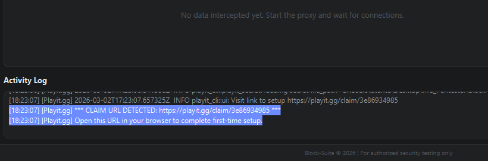
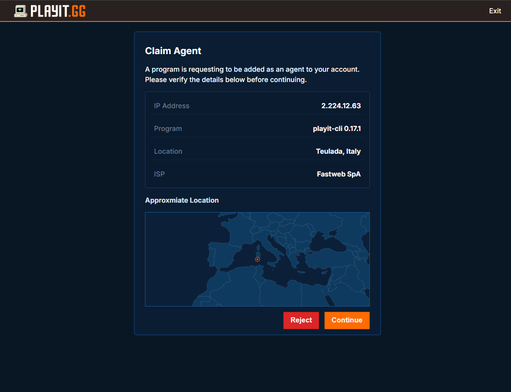
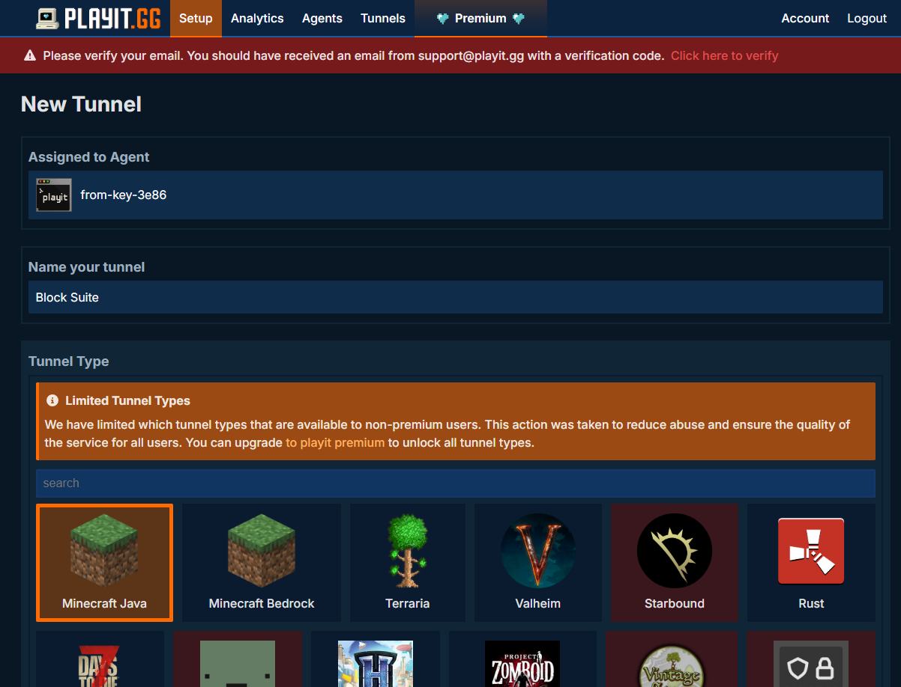
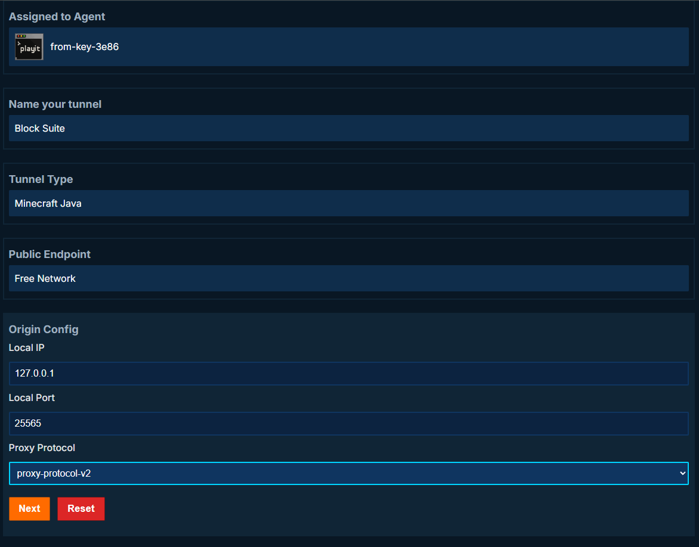
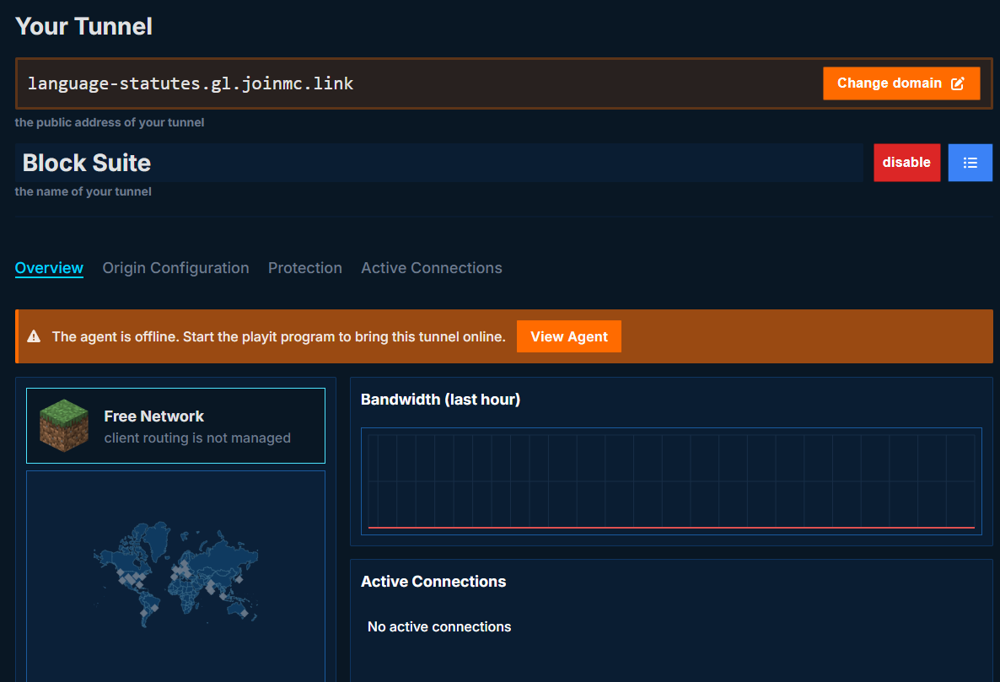
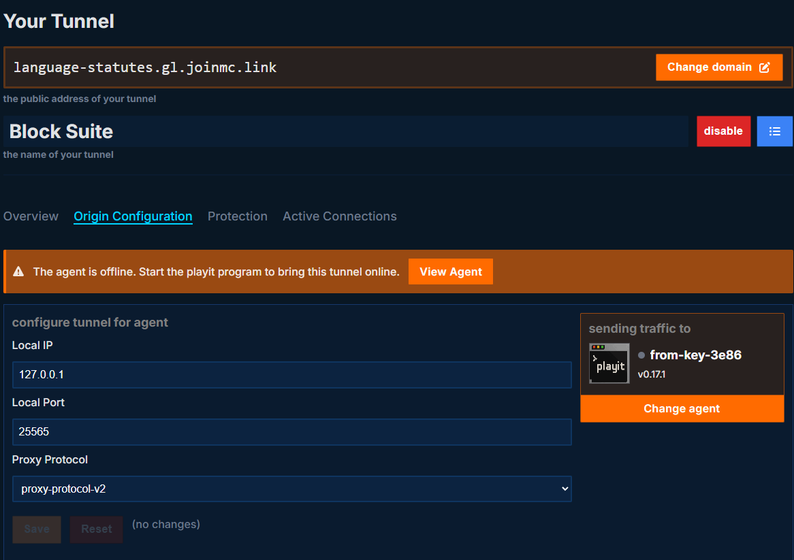
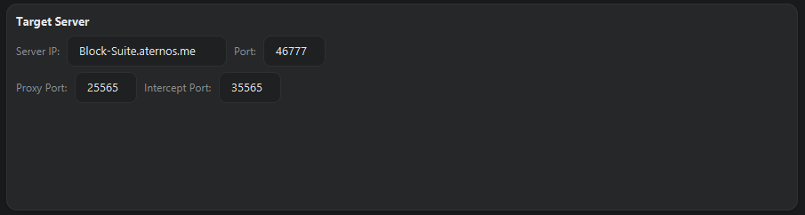
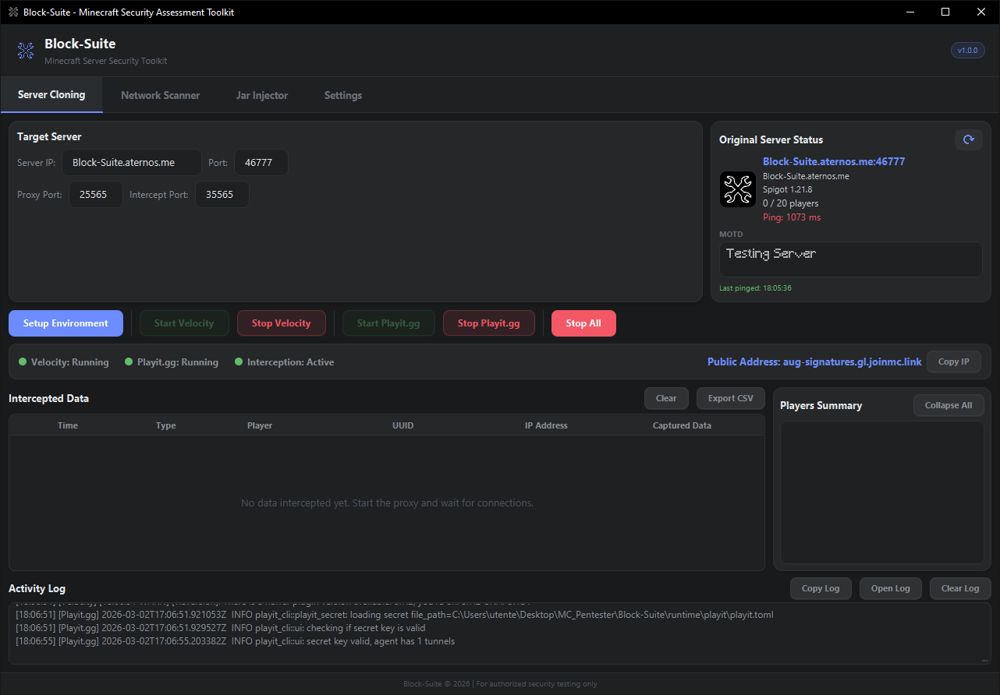

Playit.gg Tunnel Setup
Playit.gg creates a public tunnel so that players from the internet can reach your local Velocity proxy without port forwarding. This guide walks you through the complete setup: claiming the agent, creating a tunnel, configuring the origin, and connecting everything to Block-Suite.
Playit.gg is a free tunneling service. It gives you a public address (e.g. your-server.gl.joinmc.link) that routes traffic through their network to your local machine — no router/firewall changes needed.
How It Works
Player (internet)
│
▼
┌───────────────────────────┐
│ Playit.gg Public Address │ ← your-server.gl.joinmc.link
│ (playit.gg cloud) │
└───────────┬───────────────┘
│ tunnel
▼
┌───────────────────────────┐
│ Playit Agent (local) │ ← runtime/playit/playit.exe
│ Origin: 127.0.0.1:25565 │
└───────────┬───────────────┘
│ forwards to
▼
┌───────────────────────────┐
│ Velocity Proxy (local) │ ← listening on port 25565
│ → forwards to target │
└───────────────────────────┘Players connect to the playit.gg public address. The playit agent running on your PC receives that traffic and forwards it to your local Velocity proxy, which then sends it to the target server.
First-Time Setup (Claiming the Agent)
The very first time you use playit.gg with Block-Suite, you need to claim the agent and link it to your playit.gg account. Here's the step-by-step:
Go to playit.gg and sign up for a free account (you can use Google, Discord, or email). Keep this tab open — you'll need it soon.
This downloads the playit agent (
playit.exe) into runtime/playit/ and prepares the Velocity config.
Block-Suite launches the playit agent. Since it's the first time, the agent has no secret key yet and needs to be claimed.
Within a few seconds, a line like this appears in the Activity Log:
[Playit.gg] *** CLAIM URL DETECTED: https://playit.gg/claim/abc-def-123 ***
[Playit.gg] Open this URL in your browser to complete first-time setup.The claim page asks you to confirm linking this agent to your account. Click "Claim" or "Add Agent". Once claimed, the agent receives a secret key that is saved to
runtime/playit/playit.toml — you won't need to claim again.


If you don't open the claim URL, the agent will keep printing it repeatedly. The tunnel will not work until the agent is claimed and linked to your account.
Creating a Tunnel on Playit.gg
After claiming the agent, you need to create a tunnel in the playit.gg dashboard that tells their servers where to forward player traffic.
Open playit.gg/account/tunnels and log in.
You'll see options for tunnel type. Select "Minecraft Java" (this sets up a TCP tunnel on port 25565 by default).
This is the most important part — it tells playit.gg where to send traffic on your local machine:
| Field | Value | Explanation |
|---|---|---|
| Local IP | 127.0.0.1 |
Localhost — the playit agent and Velocity proxy are on the same machine |
| Local Port | 25565 |
Must match the Proxy Port in Block-Suite's Server Cloning tab (default: 25565) |
Under the tunnel settings, look for the Proxy Protocol option:
| Option | When to Use |
|---|---|
| Proxy Protocol v2 (recommended) | Use this when you have HAProxy Protocol = ON in Block-Suite's Advanced Cloning settings (default). This forwards the real player IP through the tunnel. |
| None / Disabled | Use this when you have HAProxy Protocol = OFF in Block-Suite. All players will appear with the tunnel's IP instead of their real IP. |
The playit.gg tunnel Proxy Protocol setting must match the HAProxy Protocol setting in Block-Suite. If one is ON and the other is OFF, players will get disconnected immediately on connect.
Click "Create" or "Save". Playit.gg assigns you a public address like:
your-server.gl.joinmc.linksomething.at.ply.gg:12345


Port Matching: Block-Suite ↔ Playit.gg
The Local Port in the playit.gg tunnel must match the Proxy Port field in Block-Suite's Server Cloning tab. Here's the flow:
| Component | Setting | Default |
|---|---|---|
| Block-Suite → Server Cloning tab | Proxy Port | 25565 |
| Velocity (auto-generated) | Bind address | 0.0.0.0:25565 |
| Playit.gg tunnel | Local Port (origin) | 25565 |
If you change the Proxy Port in Block-Suite (e.g. to 25577), you must also update the Local Port in the playit.gg tunnel to 25577.


Proxy Protocol Explained
The Proxy Protocol is a header that the playit.gg tunnel prepends to each connection, containing the player's real IP address. Velocity reads this header to know the actual player IP instead of seeing the tunnel's IP.
How the settings connect
| Playit.gg Tunnel | Block-Suite Setting | Result |
|---|---|---|
| Proxy Protocol = v2 | HAProxy Protocol = ON | ✅ Works — real player IPs visible in intercepted data |
| Proxy Protocol = None | HAProxy Protocol = OFF | ✅ Works — but all players show the tunnel's IP |
| Proxy Protocol = v2 | HAProxy Protocol = OFF | ❌ Broken — players disconnected (Velocity can't parse the header) |
| Proxy Protocol = None | HAProxy Protocol = ON | ❌ Broken — players disconnected (Velocity expects a header that isn't there) |
Use Proxy Protocol v2 on the playit.gg tunnel + HAProxy Protocol ON in Block-Suite. This gives you real player IPs for geolocation and intelligence gathering.
Complete Workflow (Start to Finish)
Once the one-time claim and tunnel creation are done, this is the workflow for every session:
In Server Cloning tab, set the target IP and port. Click Check Status to verify the target is online.
Downloads Velocity + plugins, generates configs. Wait for "Environment setup complete!" in the Activity Log.
Launches the Velocity proxy. The status dot turns green. The interception server also starts automatically.
Launches the playit agent. It connects to playit.gg cloud and activates your tunnel. The public address appears in the Activity Log and the status bar:
[Playit.gg] *** PUBLIC ADDRESS: your-server.gl.joinmc.link ***
[Playit.gg] Share this address for players to connect!Copy the address with the Copy IP button in the status bar. Players connect to this address in their Minecraft client.
When players join, their data appears in the Intercepted Data table. Click on a player in the Players panel for the full More Info overlay.

Tunnel Address Persistence
Block-Suite automatically saves the detected tunnel address to runtime/playit/tunnel_address.txt. On subsequent launches, it restores the address immediately instead of waiting for playit.gg to re-detect it.
The address is also detected from:
- The
playit.tomlconfig file (if it contains domain info) - The playit.gg API (using the agent's secret key)
- Real-time output parsing (claim URLs, NewClient logs, tunnel domain patterns)
Troubleshooting
Claim URL doesn't appear
- Make sure you clicked "Setup Environment" first — the playit agent must be downloaded
- Check the Activity Log for any error messages from
[Playit.gg] - Try stopping and restarting playit.gg
- If
runtime/playit/playit.tomlalready exists from a previous claim, delete it and restart to get a fresh claim URL
Players disconnect immediately
- Most common cause: Proxy Protocol mismatch. Check the table above — both sides must match
- Verify the playit.gg tunnel's Local Port matches Block-Suite's Proxy Port
- Ensure Velocity is actually running (green dot in status bar)
Public address shows "N/A"
- The tunnel may not be active yet. Give it 10-15 seconds after starting playit.gg
- Check the Activity Log for
[Playit.gg] *** PUBLIC ADDRESS: ... *** - If using for the first time, you must claim the agent first (see above)
- Try checking your tunnel address manually at playit.gg/account/tunnels
Agent exits immediately (exit code 1)
- A corrupt
playit.tomlcan cause this. Deleteruntime/playit/playit.tomland restart - Ensure no firewall is blocking
playit.exefrom making outbound connections - Check if another instance of playit is already running (Task Manager → look for
playit.exe)
Playit.gg Files
runtime/
playit/
playit.exe ← The playit.gg agent binary (auto-downloaded)
playit.toml ← Agent config + secret key (generated after claim)
tunnel_address.txt ← Saved public address for quick restoreThe playit.toml file contains your agent's secret key. Anyone with this file can control your tunnels. Keep it private.